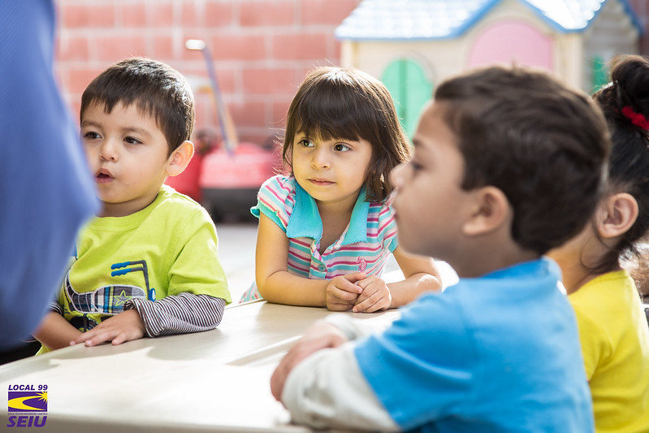
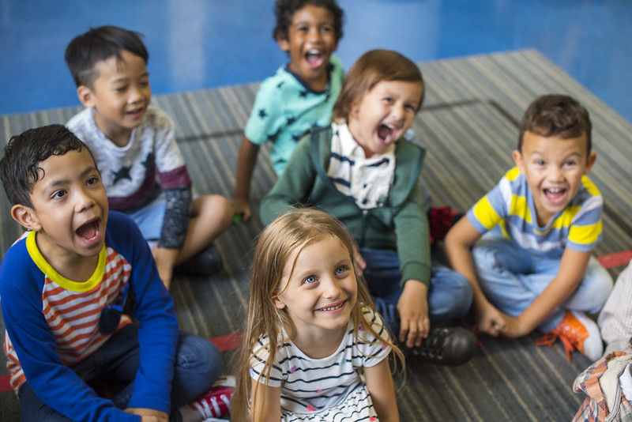

Üdvözlünk a Családi Napközi "Rólunk" oldalán! Mi, a fejlesztők, elkötelezettek vagyunk abban, hogy egy biztonságos és élénk közegben támogassuk a gyermekfejlődést. Napközink a játékos tanulás, kreativitás és egészséges életmód iránti elkötelezettséget képviseli. Szakértő csapatunk gondoskodik arról, hogy a gyerekek ne csak gondozásban részesüljenek, hanem személyes és szociális készségeik is fejlődjenek.
A Családi Napközi nem csupán egy intézmény, hanem egy család, ahol mindannyian együttműködünk, hogy minden gyermek itt otthon érezze magát. Szívvel várunk minden családot, és izgatottak vagyunk, hogy része lehessünk gyermekének fejlődésében és boldogulásában.
